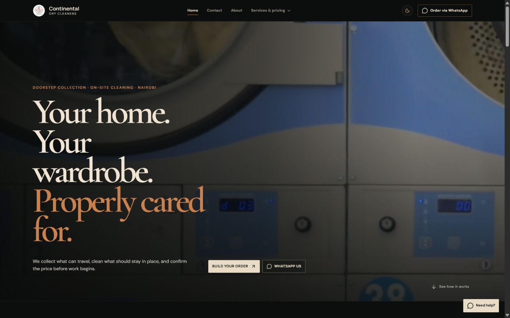

01 · product
Product engineering
Responsive products from information architecture to tested implementation, with accessibility and real user paths as core requirements.
<!-- readme.md · last edited from Istanbul -->
I’m Khalid, a software and AI engineer. I turn complex requirements into clear, resilient products for the web, mobile, and intelligent systems.
Useful software has to survive contact with real people, devices, networks, budgets, and uncertainty.
I grew up in Nairobi and moved to Istanbul to study software development. Building across both taught me to question the ideal version of a product and design for the conditions it will actually meet.
I move between product engineering and applied AI — from interface and APIs to data flows, evaluation, testing, and delivery.
Read the full résumé ↗01 · product
Responsive products from information architecture to tested implementation, with accessibility and real user paths as core requirements.
02 · ai
Model capability turned into dependable behaviour: evaluation, conservative fallbacks, semantic retrieval, OCR, explicit uncertainty.
03 · systems
Services, queues, databases, observability, CI and deployment structured so the system stays understandable after launch.
04 · mobile
Device-conscious interfaces with focused flows and resilient state — built for mobile, not compressed from desktop.

projects/continental ● live
Mobile-first service and ordering for a real Nairobi business: transparent pricing, guided WhatsApp conversion, theming, and production QA.
projects/doc-platform distributed ai
Four independently tested services for OCR, semantic search, authentication, queues, and observability.
projects/medassist-ai health tech
Conservative symptom guidance connected to clinic discovery, appointments, medicine ordering, and role-based administration.
projects/water-potability ml study
A documented classification study comparing three models across 3,276 chemical measurement records.
projects/safarigo ◐ in progress
Kenya-focused intercity booking: route discovery, real-time seat state, passenger details, and confirmation.
Shipping web and mobile products from requirements and architecture through QA and deployment.
Contributed within active development cycles using collaborative workflows, maintenance, and code review.
AI, cloud computing, mobile development, testing, algorithms, and system design.
Production React systems, applied ML evaluation, distributed services, accessibility, and delivery.
I’m open to software engineering and applied AI roles. Tell me what you’re building and where it needs to go.
projects/continental/README.md ● live
A production website for a real Nairobi dry-cleaning business: collection and on-site cleaning across the city, explained clearly enough that a customer on a phone can go from “how much?” to a booked pickup in a few taps.
Continental is a working business, not a concept. Its customers arrive with practical questions: what do you clean, what does it cost, do you come to me, and how do I book? The site had to answer them clearly, then hand the customer straight to a conversation with the business.
React 19 with TypeScript. Typed service and pricing data keep the catalogue consistent as it grows, and catch mistakes at build time rather than in front of a customer.
Vercel for hosting. Fast global delivery, HTTPS by default, and simple deploys for a site a small business depends on.
Because real customers use it, the site went through production QA before launch: checking content and prices, testing the conversion flow end to end, and reviewing layout, readability, and interaction across screen sizes and both themes.
Shipping for a real business changes what “done” means. The measure is not how the site looks in a portfolio but whether the owner gets better enquiries. Meeting customers where they already are (phones, WhatsApp, clear prices) mattered more than any single feature.
projects/doc-platform/README.md distributed ai
A document management platform built as a production-style microservice system. Users upload PDFs, Word files, or scans; the platform extracts the text, processes it in the background with AI, and makes everything searchable by meaning rather than keywords.
I wanted one project that covered the whole lifecycle of a cloud-native system, not just a single service: distributed communication, background processing, CI/CD, monitoring, security, and AI. Every one of those concerns had to work in practice, with tests and dashboards to prove it.
A user registers and logs in through the gateway, then creates a document or uploads a file. Text is extracted automatically (pdfplumber for PDFs, Tesseract OCR for images). The document service saves it and publishes a document.created event to RabbitMQ; the notification service picks that up and records a notification for the user. In parallel, a Celery worker generates embeddings and extracts entities, a category, and sentiment.
client ─► api-gateway :8080 JWT · rate limit · security headers · circuit breaker
├─► document-service CRUD · upload/OCR · summarise · semantic search
│ └─ publishes document.created ─► RabbitMQ ─► notification-service
├─► auth-service register · login · JWT issue/refresh
└─► notification-service
celery worker (Redis broker) embeddings · entities · category · sentiment
PostgreSQL (3 databases) · Redis (rate limits, AI cache) · Prometheus + Grafana
Every AI feature has a fallback, so the core platform works with no OpenAI key at all. Summaries use GPT-4o-mini, or fall back to an extractive summary. Semantic search uses text-embedding-3-small vectors, or falls back to TF-IDF cosine similarity. Tag suggestions, entity extraction, and sentiment are skipped cleanly rather than failing. AI results are cached in Redis for an hour to keep costs and latency down.
/metrics; an auto-provisioned dashboard shows request rate, error rate, P95/P99 latency, and health. OpenTelemetry tracing runs on every service.Splitting a system into services is the easy part; making it observable and resilient is the real work. Designing the fallbacks first made the AI features feel dependable instead of fragile, which is the same principle I apply to product work.
projects/medassist-ai/README.md health tech
A Kenya-first health platform that combines conservative AI symptom triage with the next step a patient actually needs: finding a vetted clinic, booking an appointment, or ordering over-the-counter medicine, priced in shillings. Clinics get a management dashboard on the other side.
Symptom checkers usually stop at advice, and clinic directories usually start with no context. A patient in Nairobi with a worrying symptom needs both: an honest sense of how urgent it is, then a clear path to care they can reach and afford. MedAssist joins those steps in one flow.
React 19 SPA (Vercel CDN)
│ /api/*
▼
Nginx reverse proxy (SSL via Let's Encrypt)
▼
FastAPI backend (Docker) routes: auth · triage · clinics · appointments · orders · dashboard
▼
PostgreSQL 15 (JSONB for medical data) · planned on AWS RDS af-south-1
The back end separates routes, Pydantic schemas, SQLAlchemy models, and a services layer that holds the business logic (the triage engine, booking, and analytics). The front end uses Zustand for authentication state, TanStack Query for server state and caching, React Hook Form with Zod for validated forms, and Recharts for clinic analytics.
There are three roles: patient, clinic admin, and super admin. Every API route declares which role it needs. Authentication uses JWTs signed with python-jose, passwords are hashed with bcrypt, and allowed origins are configured per environment. The deployment plan includes M-Pesa (Safaricom Daraja) credentials for local payments.
I set performance targets for 3G rather than office Wi-Fi: under 3 seconds for the landing page and dashboard, under 2 seconds for a triage result, and under 500 ms time-to-first-byte. Vite code-splitting, CDN edge caching, query caching, async FastAPI handlers, and gzip at Nginx are how it gets there.
Docker Compose runs the database, API, front end, and Nginx locally with one command, plus a hot-reload dev mode. GitHub Actions handles CI/CD; there is a backend smoke test, a TypeScript type check, and a production build check, plus a written deployment checklist and SSL renewal runbook.
MedAssist is a triage and guidance tool, not a diagnostic or prescribing service. Designing for that honestly (conservative defaults, clear escalation, no false certainty) was the most important product decision in the project.
projects/water-potability/README.md ml study
A machine-learning study that asks whether water is safe to drink based only on measurable chemistry, comparing three classifiers on 3,276 samples and being honest about what the data can and can’t tell us.
Can a model judge whether water is potable from nine physicochemical measurements: pH, hardness, dissolved solids, chloramines, sulfate, conductivity, organic carbon, trihalomethanes, and turbidity? The target is binary: safe (1) or not safe (0).
Random forest performed best. Feature importance ranked sulfate, pH, and hardness highest, but the scores were close across all nine features. That points to potability depending on interactions between indicators rather than any single threshold, which also explains why a linear model struggles.
67% is a real improvement over the linear baseline, but it is not good enough to decide whether someone drinks a glass of water. The point of the study is the evaluation itself: knowing where the model’s ceiling is with this data, and why. In a real deployment, a model like this would flag samples for lab testing, never replace it.
A small Streamlit app loads the trained model, reports its test accuracy, and lets you enter the nine measurements to get a prediction, so the study can be explored without opening the notebook.
Hyperparameter tuning, k-fold cross-validation instead of a single split, and handling class imbalance (for example with SMOTE) are the clear next experiments, along with reporting precision and recall for the “safe” class, which is the costly one to get wrong.
projects/safarigo/README.md ◐ in progress
An intercity bus booking product for Kenya, built around the moment that matters most to a traveller: knowing the seat they picked is really theirs.
Booking intercity travel in Kenya, say from Nairobi to Mombasa, can still mean phone calls, queues, and uncertainty about which seat you actually have. SafariGo is my attempt at a booking flow that feels as certain as boarding the bus.
Most bookings will happen on a phone, often on the move, so the seat map, forms, and confirmation are designed for small screens and patchy connections first. The hardest engineering problem is seat state: holding a seat long enough to finish paying without locking it forever when someone abandons the booking.
SafariGo is in active development in a private repository. I’m happy to walk through the product and code in an interview.
↑↓ navigate ↵ open esc close